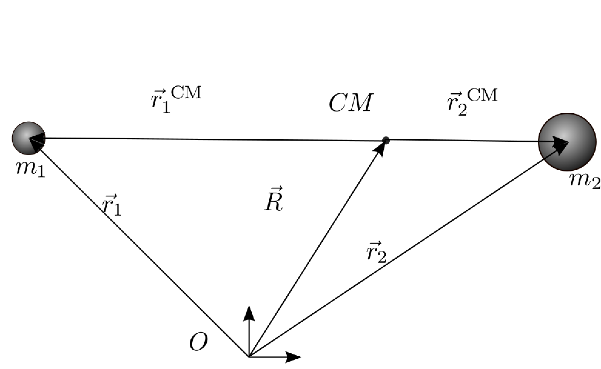

Forrige side🙂 🙁2-legemeproblem sett fra massesenterFORUM
Fant du det? Innser du at begge legemene går i ellipser omkring massesenteret?
 $$\begin{aligned} \vec{r_1}&=-\frac{\hat\mu}{m_1}\vec{r}\\ \vec{r_2}&=\frac{\hat\mu}{m_2}\vec{r}\end{aligned}$$
(MINNER IGJEN OM at vi nå har fjernet CM fra alle symbolene for å gjøre skrivingen lettere, alle vektorer har nå origo i massesenteret slik at $\vec{r_1}$ og $\vec{r_2}$ tilsvarer $\vec{r_1}^{CM}$ og $\vec{r_2}^{CM}$ på figuren.) Ser du at ved å ta absoluttverdien på begge sider her, så har du likningene for r1(f) og r2(f) som altså er lengdene av vektorene $\vec{r_1}$ og $\vec{r_2}$. Disse viser altså banene til m1 og m2 som funksjon av en gitt vinkel f. Mens r (eller egentlig r(f)) som står på høyre side i likningen er lengden r⃗ som vi utledet i forrige forelesning, altså banen til m2 omkring m1. Hvis denne er en ellipsebane ser du da at også r1(f) og r2(f) blir likninger for ellipser med massesenteret som brennpunkt?
Neste side